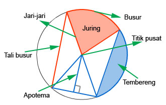
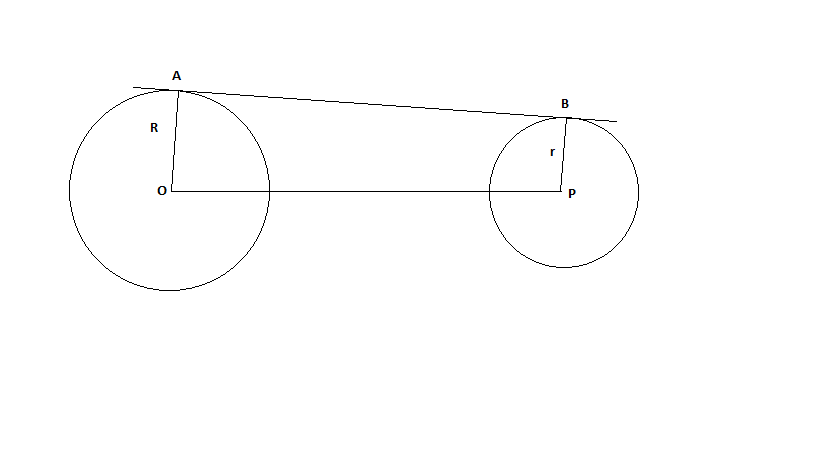
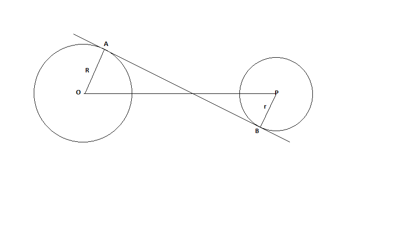

Pengertian Lingkaran
Lingkaran merupakan bangun datar yang terbentuk dari himpunan semua titik persekitaran yang mengelilingi suatu titik asal dengan jarak yang sama. jarak tersebut biasanya dinamakan r, atau radius, atau jari-jari. Sifat dari lingkaran, yaitu mempunyai simetri lipat dan simetri putar yang tak terhingga jumlahnya.
Unsur-Unsur Lingkaran
Sebuah lingkaran memiliki beberapa unsur-unsur tertentu yang berbeda dengan bangun datar lainnya. Berikut ini adalah beberapa unsur-unsur lingkaran :

- Jari-jari
Jari-jari adalah garis penghubung antara titik pusat dengan lengkungan lingkaran. biasa dilambangkan dengan "r".
- Titik Pusat
Merupakan titik yang berada tepat pada bagian tengah bangun lingkaran. biasa dilambangkan dengan titik "o".
- Diameter
Garis yang tepat membagi lingkaran menjadi dua bagian yang sama. Panjang diameter adalah dua kali jari-jari lingkaran. Biasa dilambangkan dengan "D".
- Busur LIngkaran
Busur lingkaran adalah garis lengkung pada lingkaran.
- Tali Busur
Tali busur adalah garis yang membagi lingkaran pada busur lungkaran.
- Tembereng
Luas suatu daerah di dalam bangun lingkaran yang kedua sisinya merupakan busur dan tali busur.
- Apotema
Sebuah garis tegak lurus dengan tali busur, yang menghubungkan bagian titik pusat dan tali busur sabuah lingkaran.
- Juring
Daerah di dalam lingkaran yang sisinya dibatasi dua jari-jari dan busur lingkaran.
Rumus Lingkaran
luas L=π.r.r/½.π.d
keliling K=π.d/π.2.r
Diameter D=2.r
Pengertian
Sudut pusat merupakan sudut yang terbentuk antara dua jari-jari lingkaran dan titik sudutnya adalah titik pusat lingkaran. Sedangkan sudut keliling adalah sudut yang terbentuk antara dua buah tali busur lingkaran dan titik sudutnya berada pada keliling lingkaran.Sudut keliling dan sudut pusat lingkaran memiliki persamaan yakni mengarah pada busur yang sama. Namun, perbedaan sudut keliling dan sudut pusat lingkaran yang paling utama ialah unsur pembentuk dari kedua sudut lingkaran tersebut.>Sudut pusat memiliki elemen pembentuk yaitu dua jari-jari pada lingkaran. Sedangkan sudut keliling memiliki elemen pembentuk yaitu dua buah tali busur pada lingkaran.

Rumus
Sudut pusat = 2 x Sudut Keliling
Sudut Keliling = 2 / Sudut Pusat
Contoh Soal
- Soal Pertama
Sebuah lingkaran dengan titik pusat O dan jari-jari A dan B serta ada satu titik C. Jika sudut AOB merupakan sudut pusat, kemudian sudut ACB besarnya 60 derajat. Tentukan besar sudut AOB!
Jawab:
∠AOB = 2 x ∠ACB
∠AoB = 2 x 60° = 120°
- Soal Kedua
Sebuah lingkaran dengan titik pusat O dan jari-jari A dan B serta ada satu titik C. Jika sudut ACB merupakan sudut keliling, kemudian sudut AOB besarnya 80 derajat. Tentukan besar sudut ACB!
Jawab:
∠ACB = 2 / ∠ACB
∠ACB = 2 / 80° = 40°
Pengertian
Garis singgung lingkaran adalah garis yang memotong lingkaran tepat pada satu titik dan berpotongan tegak lurus dengan jari-jari di titik singgungnya. Garis singgung lingkaran memiliki beberapa sifat atau ketentuan, antara lain:
- Pada setiap titik si lingkran hanya dapat dibuat 1 garis singgung.
- Dari satu titik diluar lingkaran bisa ditarik 2 buah garis singgung yang panjangnya sama.
- Garis singgung yang selalu tegak lurus jari-jari.
Rumus
Rumus garis singgung persekutuan luar = √garis singgung2 - (R - r)2
Rumus garis singgung persekutuan dalam = √garis singgung2 - (R + r)2
Contoh Soal
- Soal Pertama

Carilah panjang garis singgung persekutuan luar. Jika R = 11cm dan r = 2cm, OP adalah 15cm
Jawab:
AB = √OP2 - (R - r)2
= √152 - (11 - 2)2
=√225 - (9)2
=√225 - 81
=√144
=12cm
- Soal Kedua

Carilah panjang garis singgung persekutuan dalam. Jika R = 8cm dan r = 2cm, OP adalah 26cm
Jawab:
AB = √OP2 - (R + r)2
= √262 - (8 + 2)2
=√678 - (10)2
=√678 - 100
=√578
=24cm
Contoh Soal
- Soal Pertama
Ibu membeli sebuah taplak meja yang berbentuk lingkaran dengan diameter 70 cm. Berapa keliling dan juga luas taplak meja tersebut?
Jawab:
K = π . d
= π . 70
= 22/7 x 70
= 22 x 10
= 220cm
- Soal Kedua
Dina memiliki sebidang kebun berbentuk lingkaran dengan jari-jari 5 meter. Dia ingin memasang pagar di sekeliling kebunnya. Jika panjang pagar yang diperlukan adalah 1 meter per tiang, berapa jumlah tiang pagar yang dibutuhkan?
Jawab:
K = π . 2 . r
= π . 2 . 5
= 3,14 x 2 x 5
= 3,14 x 10
= 31,4m
1 tiang = 1 meter
31,4 tiang = 31,4 meter
Dina membutuhkan 31 atau 32 tiang untuk kebunnya.